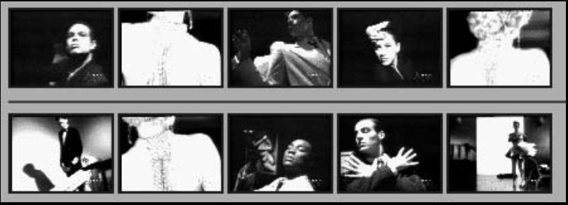
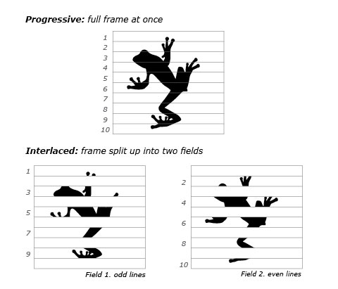
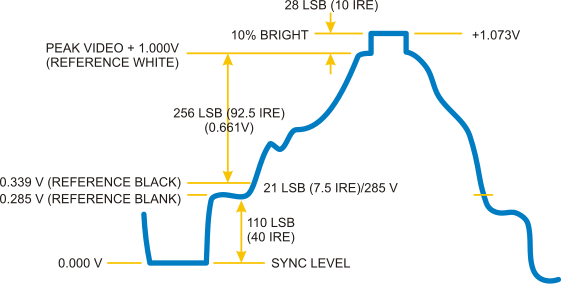

MULTIMEDIA PRESENTATION
Shivam Aggarwal - 1411073
Abhinav Handa - 1411227
Birjot Singh - 1411246
Deepak Pruthi - 1411248
Gurnoor Singh - 1411254
In this presentation we are going to cover chapter: Video
What is a Video?
Video can be defined as number of frammes per second. In other words, moving pictures with audio can be said to be as Video.
Video Display Progressive
In this signals are displayed on the screen using a technology known as Progressive scan.
Progressive scan
Its is a methods used for "painting" an image on a television screen, where the lines are drawn one at a time in sequential order. In other words, in progressive scan, the image lines (or pixel rows) are scanned in numerical order (1,2,3) down the screen from top to bottom wheras in interlaced scan, lines are drawn in an alternate order which are divided in 2 fields for a single frame (lines or rows 1,3,5, etc... followed by lines or rows 2,4,6).
For example, with a progressive scan video at 60hz, the entire image would be refreshed 60 times per second. The fast transitions result in a smooth image.
Progressive scan is a method used in computer monitors and high-end television displays. To use and view progressive scanning technology the source and the display must both be progressive scan compatible.
Interlaced Analog Broadcast TV Systems NTSC
Analog TV signals, such as those from a local station, cable company, or VCR was displayed on a TV screen using a technology known as Interlaced Scan.
Interlaced scanning uses two fields to create a frame. One field contains all the odd lines in the image, the other contains all the even lines of the image. A television scans 60 fields every second (30 odd and 30 even). These two sets of 30 fields are combined to create a full frame every 1/30th of a second, resulting in a display of 30 frames per second.
Progressive vs Interlaced
Why Progressive is better than Interlaced?
- more precise.
- accurate.
- detailed image.
- higher resolution.

1080p vs 1080i
- p here stands for progressive scan.
- i here stands for interlaced scan.
Youtube

NTSC
NTSC is based on a system of 525-lines, 60 fields/30 frames-per-second at 60Hz for transmission and display of video images. This is an interlaced system in which each frame is scanned in two fields of 262 lines, which is then combined to display a frame of video with 525 scan lines. Countries with an NTSC foundation are the U.S., Canada, Mexico, some parts of Central and South America, Japan, Taiwan, and Korea.
Phase Alternating Line (PAL)
Phase Alternating Line (PAL) is a colour encoding system for analogue television used in broadcast television systems in most countries broadcasting at 625-line / 50 field (25 frame) per second (576i).
Television encoding systems by nation

Similar to the NTSC system, Phase Alternating Line makes use of a quadrature amplitude modulated subcarrier which carries the chrominance data added to the video signal. The frequency for PAL is 4.43361875 MHz, while it is 3.579545 MHz for NTSC. PAL scans the cathode ray tube 625 times horizontally to form the video image. This is similar to the SECAM system. PAL makes use of a screen resolution of 720 × 576 pixels. PAL video can be converted to NTSC with the addition of extra frames. This can be done with techniques such as adaptive motion interpolation or inter-field interpolation.
Compared to NTSC, PAL has a more detailed picture due to the higher number of scan lines. Additionally, hues are more stable in PAL than with NTSC. Higher levels of contrast and better color reproduction are also present in PAL. Automated color correction is possible in the PAL system, unlike NTSC, which makes use of manual color correction. In fact, PAL is considered to have better picture quality than NTSC.
PAL has a slower frame rate, resulting in motion not being as smooth, and saturation varies at times between frames. The picture itself can appear to flicker at times. NTSC holds an edge over PAL when it comes to smoother pictures, especially with high-speed footage, due to its higher frame rate.
TYPES OF VIDEO SIGNALS
Video signals can be organized in three different ways: Component video, S-video and Composite video.
Composite video
Composite video (one channel) is an analog video transmission (without audio) that carries standard definition video typically at 480i or 576i resolution. Video information is encoded on one channel, unlike the higher-quality S-video (two channels) and the even higher-quality component video (three or more channels).
COMPOSITE VIDEO
S-Video
S-Video (also known as separate video and Y/C) is a signaling standard for standard definition video, typically 480i or 576i. By separating the black-and-white and coloring signals, it achieves better image quality than composite video, but has lower color resolution than component video.
S-VIDEO

Component video
Component video is a video signal that has been split into two or more component channels. In popular use, it refers to a type of component analog video (CAV) information that is transmitted or stored as three separate signals. Component video can be contrasted with composite video (NTSC, PAL or SECAM) in which all the video information is combined into a single line level signal that is used in analog television.
CONNECTORS

VGA CABLE

SCART
HDMI (High-Definition Multimedia Interface)
HDMI is a proprietary audio/video interface for transmitting uncompressed video data and compressed or uncompressed digital audio data from an HDMI-compliant source device, such as a display controller, to a compatible computer monitor, video projector, digital television, or digital audio device. HDMI is a digital replacement for analog video standards.
Brief Intro to Signals
Analog and digital signals are used to transmit information, usually through electric signals. In both these technologies, the information, such as any audio or video, is transformed into electric signals.

HDMI CONNECTOR PINOUT

DisplayPort
DisplayPort (DP) is a digital display interface developed by a consortium of PC and chip manufacturers and standardized by the Video Electronics Standards Association (VESA). The interface is primarily used to connect a video source to a display device such as a computer monitor, and it can also carry audio, USB, and other forms of data.
DISPLAY PORT CONNECTOR

DISPLAY PORT